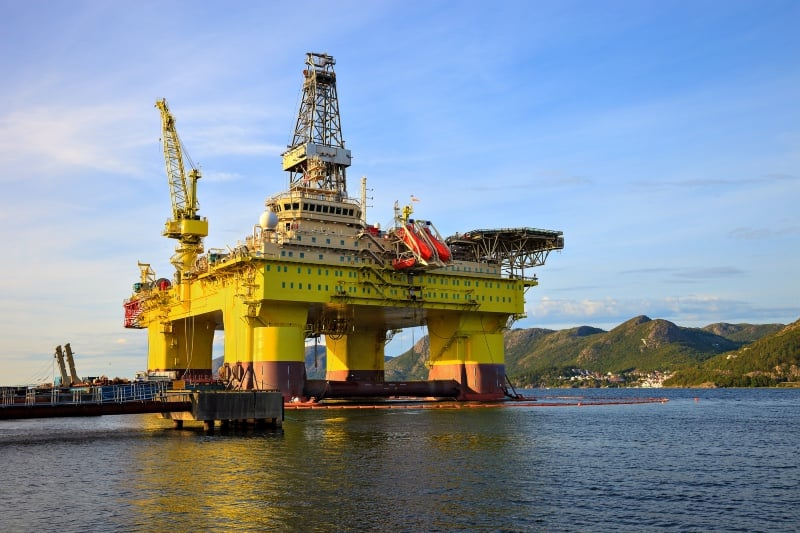

WHY STAVANGER?
Historical center for petroleum
Stavanger has always been ruled by the sea. The cathedral which laid the basis for the original town in the 12th century faces towards the Vågen inner harbour. Maritime routes were the channels for trade and external influences. In the 19th century, the town blossomed as a centre for the herring fishery and sailing ships.
The city stood ready to take on the role of Norway’s “oil capital” after the famed 1969 discovery. The first crude began to be produced in 1971.